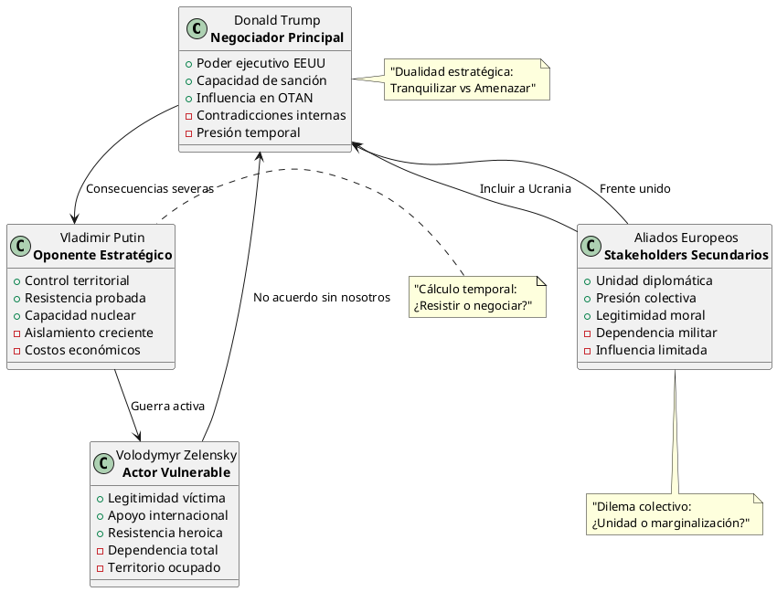
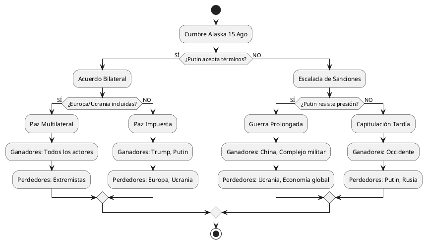

Después de Tranquilizar a Europa, Trump Adopta un Tono Diferente Sobre las Amenazas Rusas
Después de Tranquilizar a Europa, Trump Adopta un Tono Diferente Sobre las Amenazas Rusas
El artículo del New York Times revela una paradoja diplomática fundamental: Trump simultáneamente tranquiliza a los aliados europeos mientras amenaza públicamente a Putin con "consecuencias severas". Esta dicotomía refleja una estrategia de negociación de múltiples niveles que expone las tensiones inherentes en la política exterior estadounidense.
Contexto Temporal Crítico
- Reunión virtual con líderes europeos y Zelensky
- Cumbre Trump-Putin programada en Alaska
- Plazo previo de 50 días reducido a 10-12 días para el cese de la guerra
ANÁLISIS DE ACTORES Y DINÁMICAS DE PODER
Los Protagonistas Principales
Donald Trump: El Negociador Ambivalente
- Fortalezas Percibidas:
- Capacidad de presión bilateral (Europa + Rusia)
- Flexibilidad táctica en el discurso
- Posición de fuerza como presidente de EEUU
- Debilidades Estructurales:
- Admisión implícita de "poder limitado" sobre Putin
- Contradicciones entre mensaje europeo y amenazas públicas
- Presión temporal autoimpuesta (plazos decrecientes)
Vladimir Putin: El Calculador Estratégico
Europa: Los Aliados Inquietos
DIAGRAMA DE RELACIONES DE PODER

ANÁLISIS ESTRATÉGICO EN PROFUNDIDAD
La Paradoja de la Comunicación Dual
Trump ejecuta una estrategia comunicativa de doble nivel que revela tanto sofisticación táctica como potencial inconsistencia estratégica:
- Nivel Tranquilizador (Europa): Presenta unidad y coordinación
- Nivel Amenazante (Rusia): Proyecta fuerza y determinación
Esta dualidad sugiere un intento de maximizar la presión sobre Putin mientras minimiza la ansiedad europea, pero crea riesgos de credibilidad.
Dinámicas de Tiempo y Presión
El patrón decreciente de plazos (50 días → 10-12 días) indica:
- Impaciencia estratégica de la administración Trump
- Presión política interna para mostrar resultados rápidos
- Riesgo de negociación débil por urgencia temporal
Análisis de Ganadores y Perdedores Potenciales
ESCENARIO 1: Acuerdo Rápido Trump-Putin
- Ganadores:
- Trump: Victoria política doméstica, "pacificador"
- Putin: Legitimación internacional, consolidación territorial
- Mercados globales: Reducción de incertidumbre
- Perdedores:
- Ucrania: Pérdida territorial, soberanía comprometida
- Europa: Marginalización diplomática, precedente peligroso
- Orden internacional: Validación de la agresión
ESCENARIO 2: Escalada por Fracaso Negociador
- Ganadores:
- Europa: Validación de posición, liderazgo moral
- Complejo militar-industrial: Incremento de gastos de defensa
- China: Debilitamiento de rivales occidentales
- Perdedores:
- Ucrania: Continuación de guerra, destrucción sostenida
- Economía global: Inestabilidad prolongada
- Trump: Fracaso diplomático visible
DIAGRAMA DE ESCENARIOS ESTRATÉGICOS

El Factor Europeo: Entre Unidad y Marginalización
Los aliados europeos se enfrentan a un dilema estratégico fundamental:
- Mantener unidad con EEUU arriesgando marginación
- Presionar por inclusión arriesgando ruptura con Washington
- Preparar alternativas arriesgando debilitamiento de OTAN
La llamada virtual del 13 de agosto representa un esfuerzo europeo por mantener relevancia en un proceso que podría determinar el futuro del orden de seguridad continental.
Implicaciones Geoeconómicas
Sectores Impactados por Escenarios:
- Energético: Gas ruso, renovables europeas
- Militar: Industria de defensa occidental
- Agrícola: Granos ucranianos, fertilizantes rusos
- Tecnológico: Semiconductores, ciberseguridad
Análisis de Mercados:
El comportamiento de los mercados financieros refleja la incertidumbre sobre los resultados, con volatilidad en:
- Commodities energéticos
- Monedas regionales (EUR, RUB, UAH)
- Acciones de defensa y reconstrucción
EVALUACIÓN CRÍTICA DE LA ESTRATEGIA TRUMP
Fortalezas Tácticas:
- Presión multi-vector sobre Putin
- Gestión de alianzas europeas
- Aprovechamiento de momento político
Debilidades Estratégicas:
- Inconsistencia comunicativa que erosiona credibilidad
- Presión temporal autoimpuesta que debilita posición negociadora
- Subestimación de la complejidad del conflicto ucraniano
Riesgos Identificados:
- Fracaso diplomático público que afecte liderazgo global EEUU
- Fragmentación de alianza atlántica por marginación europea
- Precedente peligroso de negociación bilateral con agresores
PROYECCIONES Y ESCENARIOS FUTUROS
Probabilidades Estimadas (Basadas en análisis de patrones):
- Acuerdo parcial con concesiones territoriales: 45%
- Fracaso negociador y escalada: 35%
- Acuerdo multilateral satisfactorio: 20%
Indicadores Clave a Monitorear:
- Comunicaciones previas a la cumbre (14-15 agosto)
- Reacciones de mercados financieros y commodities
- Declaraciones post-cumbre de actores europeos
- Movimientos militares en terreno ucraniano
CONCLUSIONES ANALÍTICAS
La situación descrita en el artículo revela las tensiones inherentes en la diplomacia de alto riesgo en un mundo multipolar. Trump intenta equilibrar presiones domésticas (rapidez), aliadas (inclusión) y estratégicas (efectividad), pero este equilibrio es intrínsecamente inestable.
Lecciones Estratégicas:
- La comunicación dual puede ser efectiva a corto plazo pero erosiona credibilidad a largo plazo
- Los plazos autoimpuestos debilitan posiciones negociadoras
- La marginación de aliados crea vulnerabilidades estratégicas futuras
Implicaciones para el Orden Internacional:
El resultado de esta crisis determinará si:
- La agresión territorial puede ser recompensada diplomáticamente
- Los aliados tradicionales mantienen relevancia en conflictos globales
- El modelo westfaliano de soberanía territorial sobrevive en el siglo XXI
El verdadero test no será solo si Trump logra un acuerdo, sino si ese acuerdo fortalece o debilita los principios fundamentales del orden internacional liberal que EEUU ha liderado desde 1945.
—
Este análisis se basa en información pública disponible hasta el 14 de agosto de 2025 y representa una evaluación independiente de dinámicas geopolíticas complejas.